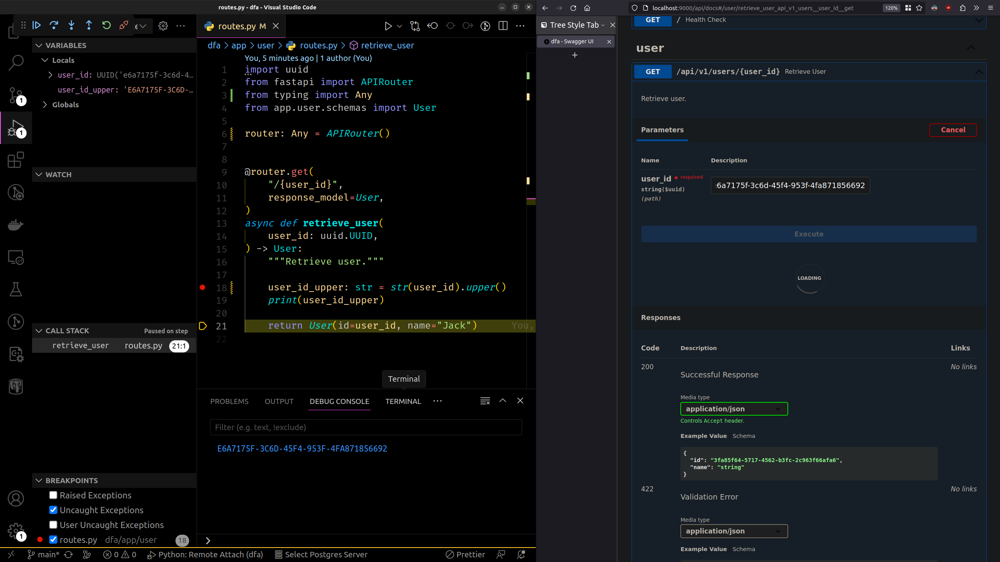
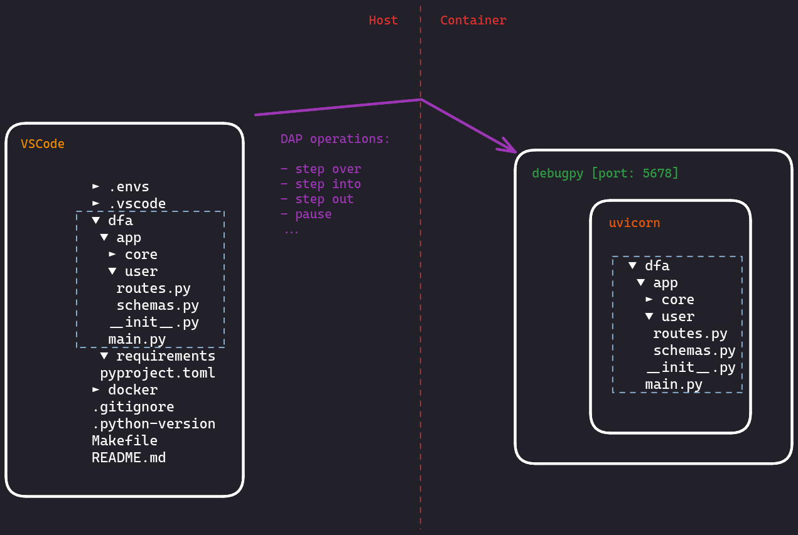

Debugging a fastapi app
Objective⌗
Debug remotely a fastapi app with VSCode using the Debug Adapter Protocol (DAP).
Overview⌗
Matching host/container source code⌗
launch.json
{
"version": "0.2.0",
"configurations": [
{
"name": "Python: Remote Attach",
"type": "python",
"request": "attach",
"connect": {
"host": "127.0.0.1", <-- pydebug hostname
"port": 5678 <-- pydebug port
},
"pathMappings": [
{
"localRoot": "${workspaceFolder}/dfa", <-- path to the app (host)
"remoteRoot": "/dfa" <-- path to the app (container)
}
],
"justMyCode": true
}
]
}
Executing the app inside the container with debugpy⌗
Container entrypoint (/docker/local/api/start)
watchmedo auto-restart --recursive -p '*.py' \
-- python -m debugpy --listen 0.0.0.0:5678 \
-m uvicorn app.main:app --host 0.0.0.0 --port 9000 --workers 1